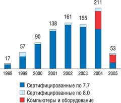
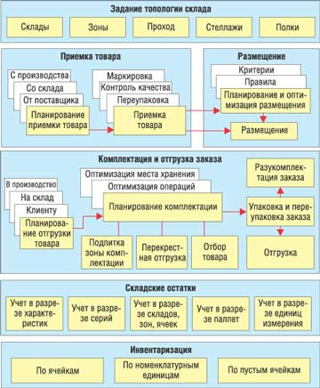
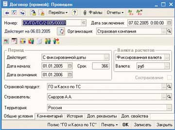

Андрей Колесов
Вряд ли я открою Америку, выдвинув тезис о том, что общественное мнение - категория весьма консервативная и изменяется оно с довольно существенной задержкой во времени по сравнению с действительностью. Это в полной мере относится и к ИТ-рынку; более того, здесь данный эффект оказывается еще заметнее на фоне быстрого развития технологий и коррекции бизнес-стратегий ИТ-поставщиков.
Сегодня, по-видимому, можно констатировать, что в глазах общества имидж фирмы "1С" (http://www.1c.ru) на рынке экономического ПО (условно назовем его ERP-сегментом) наконец-то претерпел качественные изменения: руководители предприятий, ИТ-специалисты, пресса (профессиональная и общая) начали воспринимать "1С:Предприятие" не как "бухгалтерскую программку", а как комплекс управленческих решений на современной технологической платформе.
Разумеется, за всем этим стоят вполне объективные причины: повышение спроса на средства автоматизации со стороны рынка в целом, рост бизнеса традиционных клиентов "1С", развитие технологий (в первую очередь выпуск платформы "1С:Предприятие 8.0"), расширение спектра предложений со стороны "1С" и ее партнеров и т. д. Однако нельзя не отметить и важность существенной коррекции маркетинговой стратегии самой фирмы "1С", которая фактически лишь два года назад публично обозначила свое новое позиционирование на ERP-рынке.
В основе же такого развития бизнеса лежит расширение спектра прикладных решений и рост их функциональности, в первую очередь на базе качественно новых возможностей платформы 8.0 (см. "1С:Предприятие 8.0" расширяет свои возможности", "BYTE/Россия" № 10'2004). Самая простая классификация таких продуктов выглядит следующим образом: горизонтальные и вертикальные решения.
Как мы неоднократно отмечали ранее (см. "Тиражируемые решения на базе платформы "1С:Предприятие", "BYTE/Россия" № 12'2002), разработкой тиражируемых решений занимается не только сама фирма "1С", но и ее партнеры. И здесь существует вполне естественная схема разделения труда: "1С" создает наиболее массовые горизонтальные приложения (набор которых также постоянно расширяется: бухгалтерия, торговля, управление персоналом, производство, бюджетная сфера, образование и т. д.), а партнеры, в соответствии со своей специализацией, - вертикальные, отраслевые. Официальных публичных данных на этот счет нет, но можно довольно уверенно утверждать, что объемы продаж готовых продуктов "1С" составляют существенно больше 90% в общем объеме поставок тиражных решений на базе "1С:Предприятие".
Однако можно также смело прогнозировать, что значение специализированных отраслевых приложений в бизнесе "1С" будет существенно расти. И дело тут не только в увеличении спроса на такие продукты и соответственно роста их доли в структуре продаж. Вертикальные решения играют очень важную роль катализатора продаж массовых, в том числе платформообразующих, технологий.
Учитывая все это, фирма "1С" примерно год назад существенно скорректировала свою стратегию в области отраслевых решений, взяв ранее стихийно формировавшиеся партнерами предложения под свой контроль в рамках проекта "1С-Совместно"*.
* Пока название "1С-Совместно" рабочее, оно не утверждено в качестве официального.
От "1С:Совместимо" к "1С-Совместно"
Партнерская сеть "1С" исторически формировалась как внедренческая, работающая под торговой маркой поставщика (франчайзи). Однако по мере развития своего бизнеса многие фирмы-внедренцы все активнее занимаются не только адаптацией продуктов "1С" для конкретных проектов, но и разработкой собственных тиражируемых решений. Чаще всего такие решения создаются путем доработки типовых решений "1С", но иногда делаются и с "нуля" с помощью инструментальных средств платформы "1С:Предприятие". Подавляющее большинство этих приложений нацелено на задачи управления хозяйственной деятельностью заказчиков, и многие реализованы в виде модулей, дополняющих стандартные продукты "1С". Но есть вполне самостоятельные прикладные решения, например, для управления качеством, управления ИТ-услугами и т. п**.
** В партнерской сети "1С" до сих пор не выделяются в качестве отдельной категории "разработчики решений", хотя, на наш взгляд, такая градация была бы полезна, в том числе и с точки зрения заказчиков. В этой связи можно отметить, что Microsoft Business Solusions, которая имеет очень сходную с "1С" бизнес-модель, разделяет статусы партнеров - "внедренцев" и "разработчиков решений" и имеет двухуровневую иерархию в каждой из них.
Для распространения своих продуктов у разработчиков есть два варианта - продавать их самостоятельно (некоторые крупные франчайзи имеют собственные партнерские сети) или воспользоваться услугами "головной" фирмы "1С", которая в этом случае уже выступает в роли крупнейшего дистрибьютора ПО.
Вполне понятно, что децентрализованная система взаимоотношений головной фирмы и ее партнеров неминуемо приводит к появлению дублирующих друг друга по функциональности продуктов, внутренней конкуренции решений партнеров между собой и даже с продуктами "1С". Например, решение "Общепит" через сеть "1С" распространяют сразу пять фирм. Но очевидно, что именно конкуренция обеспечивает внутренний механизм саморазвития всей индустрии "1С".
Фактически контроль процесса создания тиражных партнерских решений со стороны "1С" идет лишь в рамках программы "1С:Совместимо", стартовавшей в 1998 г. (рис. 1). Всего с того времени было представлено на сертификацию 824 программных продукта и 58 серверов, рабочих станций и программно-аппаратных комплексов. С января 2004-го по май 2005 г. на сертификацию по платформе 8.0 представлено 84 программных продукта, что составляет 33% от общего числа сертифицированных программ за этот период, а за 2005 г. - 46%.
|  | Рис. 1. Динамика роста числа решений, получивших сертификат "1С:Совместимо" (данные за 2005 г. взяты за период январь-май).
|
Отметим, что сертификаты "1С:Совместимо" имеют не только решения, созданные на базе этой платформы, но и независимые продукты (например, для автоматизации банков или документооборота), которые интегрируются с системой "1С:Предприятие".
Однако помимо двух названных выше категорий продуктов - собственных и партнерских решений, в арсенале "1С" уже давно имелась группа решений, реализованных объединенными усилиями самой фирмы и партнера. Именно эта форма сотрудничества примерно год назад вступила в новый этап своего развития под названием "1С-Совместно" и наверняка будет играть очень важную роль в общем развитии ERP-направления компании.
Основная идея проекта "1С-Совместно" - поставить процесс создания вертикальных решений на долгосрочную планомерную основу, вписав его в общую стратегию развития бизнеса "1С" и подкрепив технологическими и маркетинговыми ресурсами компании.
Организация работ
Совместные решения - это программные продукты фирмы "1С", которые разрабатываются партнерами по собственной инициативе или под заказ "1С". Компания отбирает партнерские решения из не конкурирующих с типовыми конфигурациями "1С", имеющих отраслевую либо иную специализацию, наиболее продаваемых и популярных, а также исходя из стратегических и экономических интересов в соответствии с собственными планами развития тех или иных направлений.
Для выбора решений проводятся конкурсы с тщательным изучением предлагаемого продукта и оценкой разработчика с точки зрения его возможностей и перспектив в плане дальнейшей поддержки и развития продукта. К таким тендерам, помимо внутренней экспертизы "1С", привлекаются эксперты в предметной области, консультанты, а также пользователи систем либо организации, представляющие их интересы.
Участвующим в создании совместных проектов партнерам предоставляется право использовать торговую марку "1С" как мощный продвигающий фактор. Это дает весомое преимущество в конкурентной борьбе в отрасли не только с решениями для "1С:Предприятия", но и с разработками, выполненными на других платформах.
Для обеспечения качества совместных решений "1С" берет на себя производство комплектов программы, рекламных материалов к ней и распространение новых релизов и обновлений для партнеров через службу консультационной и технической поддержки. Программа продается через партнерскую сеть компании.
Поскольку имущественные права на программу приобретает фирма "1С", то борьба с незаконным тиражированием и распространением становится более серьезной. Неимущественные авторские права остаются у фирмы-разработчика и подтверждаются указаниями на коробке и в документации. На нее же возлагаются обязанности консультационной поддержки, технического сопровождения, а также дальнейшего функционального развития программы. Этому партнеру предоставляется также возможность проводить отраслевые семинары для пользователей на базе площадей "1С".
Проект "1С-Совместно" происходит от существовавшего ранее направления "Разработка совместных отраслевых и специализированных решений фирмы "1С" и партнеров-франчайзи". К сегодняшнему дню на платформе "1С:Предприятие 7.7" выпущено около 30 продуктов для различных отраслей, однако с выходом платформы 8.0 направление получило новое название и стало развиваться более интенсивно.
Сотрудничество с разработчиками происходит сейчас в основном на платформе 8.0. Помимо развития направлений, уже реализованных для версии 7.7 ("Сельское хозяйство", "Бюджетная сфера", "Медицина и здравоохранение", "Образование", "Организационный менеджмент и консалтинг"), ведутся проекты в других областях управленческой сферы и в производстве.
Тут нужно еще раз подчеркнуть, что технологическая платформа "1С:Предприятие 8.0" позволяет создавать сложные и масштабируемые решения, которые ранее не могли появиться для версии 7.7 либо не развивались вследствие имеющихся в ней ограничений. Другой важный момент состоит в том, что разработка всех совместных продуктов ведется на основе единых стандартов, которые также лежат в основе флагманского продукта "1С" - "Управление производственным предприятием". Это делает тиражные прикладные решения более качественными, унифицированными, способными к интеграции друг с другом, одновременно снижая затраты на разработку, внедрение, освоение и сопровождение систем автоматизации на платформе "1С:Предприятие 8.0".
Условной точкой старта нынешнего этапа проекта "1С-Совместно" можно считать 2 сентября 2004 г., когда в информационном письме партнерам были обозначены направления, интересующие "1С" в плане совместной разработки. В течение менее полугода было рассмотрено свыше 60 поданных партнерами заявок разной степени проработанности. В процессе переговоров сразу отсеялись те, кто был недостаточно готов к совместной работе, они сняли свои предложения. Некоторым компаниям при участии "1С" удалось договориться о тройственных взаимоотношениях, и они выступают уже в качестве "соразработчиков".
В течение года выпущено девять совместных отраслевых продуктов для таких направлений, как "Строительство", "Страхование", "Логистика", "Кадровый консалтинг, HR", "ABIS-системы" (http://v8.1c.ru/solutions). В ближайших планах выпуск еще 14 продуктов, в том числе восьми отраслевых модификаций продукта "Управление производственными предприятиями 8.0". Еще около десятка отраслевых решений находятся в стадии дополнительного изучения и выбора исполнителя.
Решения "1С-Совместно"
"1С-Логистика: Управление складом" 2.0
Партнер-разработчик - AXELOT (http://www.axelot.ru; ранее "АИСТ Ай Ти")
Специализированное тиражное решение на платформе "1С:Предприятие 8.0" для автоматизации управления технологическими процессами современного складского комплекса. Продукт создан в результате анализа опыта автоматизации и управления складскими хозяйствами ряда российских и зарубежных компаний и предназначен прежде всего для тех компаний, которые хотят не просто учитывать движение и остатки товаров, а управлять всеми складскими операциями, персоналом и оборудованием (рис. 2).
|  | Рис. 2. Основные функции решения "1С-Логистика: Управление складом".
|
Система выполняет следующие основные функции: задание топологии склада, приемка и контроль качества, переупаковка, размещение на места хранения и грузопереработки, внутрискладские перемещения, отбор товара и отгрузка, инвентаризация и списание, биллинг, формирование аналитической отчетности, а также имеет ряд дополнительных возможностей. Она поддерживает работу с различными типами торгового оборудования: принтерами этикеток, сканерами штрих-кода, бэтч- и радиотерминалами сбора данных. Применение данного решения позволяет заказчикам:
- оптимизировать использование складских площадей и объемов;
- сократить затраты на складское хранение;
- уменьшить время на проведение всех складских операций;
- уменьшить количество ошибочных складских операций;
- повысить точность и оперативность учета товара;
- избежать потерь, связанных с критичностью сроков реализации товаров;
- сократить затраты на заработную плату складских работников.
Система обеспечивает полную интеграцию с ключевыми программными продуктами "1С" на платформе "1С:Предприятие 8.0" - приложениями "Управление производственным предприятием" и "Управление торговлей". Для успешного внедрения и применения продукта подготовлен курс обучения "Организация эффективного складского хозяйства с использованием современного программного продукта "1С-Логистика: Управление складом".
Компании "1С" и AXELOT также совместно разработали два дополнительных модуля для расширения возможностей конфигурации "1С-Логистика:Управление складом". Один из них называется "Управление ресурсами и подключение радиотерминалов сбора данных". Этот модуль применим на складах, где используется технология штрих-кодирования и имеется специальное оборудование - радиотерминалы сбора данных (ТСД) с поддержкой одного из стандартов беспроводной связи (802.11a/b/g, 802.16a), а также клиента терминальных служб Windows. Для небольших складов допустимо использование обычных КПК (штрих-код вводится с программной или аппаратной клавиатуры).
Второй модуль, "Расчет услуг ответственного хранения", предназначен для расчета стоимости услуг хранения и переработки товара на складе, которое применяется на складах ответственного хранения (коммерческих складах).
По мнению экспертов "1С", данное решение как по развитости функционала, так и по стоимости владения продуктом составляет достойную конкуренцию западным WMS-разработкам, ранее занимавшим основные позиции в этой отрасли. Оно также служит хорошим примером использования новых технологических возможностей "1С:Предприятие 8.0". Например, версия платформы 7.7 не позволяла решить задачу построения системы реального времени, такой, как "1С-Логистика:Управление складом 8.0". В складских решениях, выполненных ранее на платформе 7.7, существовало ограничение на число одновременно работающих пользователей, которых на практике может быть несколько десятков.
"1С:Предприятие 8.0. Управление страховой компанией"
Партнер-разработчик -"Ортикон" (http://www.orticon.ru)
Гибкое высокопроизводительное решение для динамично развивающегося рынка страховых услуг, позволяющее автоматизировать все основные участки управленческого и регламентированного учетов. Система выполняет следующие основные функции:
- управление портфелем договоров прямого страхования, сострахования (рис. 3);
- управление продажами страховых продуктов;
- управление регулированием убытков;
- управление финансами.
|  | Рис. 3. Форма документа "Договор прямого страхования, сострахования".
|
В виде отдельных продуктов предлагаются также три дополнительных модуля - "Перестрахование", "Технические резервы" и "ОСАГО". Первый из них обеспечивает управление портфелем договоров входящего и исходящего перестрахования. Модуль "Технические резервы" предназначен для проведения расчетов технических страховых резервов с возможностями настройки методики расчета. "ОСАГО" рассчитан на страховые компании, предоставляющие услугу "Обязательное страхование автогражданской ответственности" (ОСАГО).
"Психодиагностика"
Партнер-разработчик - ВДГБ (http://www.vdgb.ru)
Продукт представляет собой расширение для конфигурации "1С:Зарплата и Управление Персоналом 8.0" и предназначен для автоматизации работы директора по персоналу, психолога, HR-менеджера в области психологической оценки личности. Научное консультирование проекта выполняла группа преподавателей кафедры психологии личности и кафедры общей психологии факультета психологии МГУ им. М. В. Ломоносова под руководством доктора психологических наук, профессора А. Н. Гусева.
Модуль "Психодиагностика" включает в себя три блока психодиагностических тестов: комплексная оценка психодиагностических черт; оценка отдельных личностных черт, психических состояний и функций; социально-психологическая оценка коллектива. Продукт позволяет проводить оценку индивидуально-личностных особенностей кандидатов (для подбора работников на вакантные места, при проведении кадровых конкурсов, при ротации кадров) с учетом соответствия сотрудников определенным должностным и профессиональным требованиям и выявлять профессионально важные качества сотрудников. С его помощью можно оценивать деловые и эмоциональные взаимоотношения в коллективе, выявлять неформальную структуру коллектива, формировать профессиональную команду с учетом индивидуально-психологических особенностей каждого сотрудника. Кроме того, модуль "Психодиагностика" позволяет прогнозировать поведение сотрудников в типичных ситуациях (для оценки потенциальных рисков, связанных с их деятельностью) и вести мониторинг психологического климата в коллективе при реализации новых или рискованных управленческих решений.
В поставку входит набор предопределенных тестов, позволяющий выявлять личностные, психологические и профессиональные качества сотрудника/кандидата. Продукт реализует следующие функциональные возможности:
- прохождение сотрудниками/кандидатами психологических тестов;
- ввод произвольного (идеального, желаемого, среднего и т. д.) психологического профиля;
- расчет и сохранение в системе результатов тестирования в разрезе даты тестирования, сотрудника/кандидата и характеристик, определяемых психологическим тестом;
- представление результатов прохождения психологических тестов как в текстовом, так и в графическом виде;
- возможность сравнения полученных в результате тестирования психологических профилей между собой или с произвольным психологическим профилем;
- представление информации об истории прохождения психологических тестов сотрудниками/кандидатами.
"1С: Предприятие 8.0. Подрядчик строительства 3.0. Управление строительным производством"
Партнер-разработчик - "Импульс-ИВЦ" (http://www.impuls-ivc.ru)
Специализированное отраслевое решение для автоматизации управления строительным производством предназначено для формирования календарных планов строительства, определения потребностей в необходимых ресурсах, а также для ведения производственного учета и анализа хода выполнения строительно-монтажных работ. Продукт применим как в работе подрядных организаций, так и для автоматизации управления строительным производством других участников инвестиционно-строительного процесса не только России, но и стран ближнего зарубежья.
Конфигурация включает следующие основные функциональные возможности:
- создание календарных планов работ для большого числа объектов строительства, с возможностью рассмотрения нескольких вариантов для одного объекта;
- назначение и отражение логических взаимосвязей между работами с возможностью задержки как по времени, так и по объему;
- назначение непосредственных исполнителей (сотрудников) для выполнения запланированных работ;
- создание шаблонов работ, групп работ и комплексных проектов для упрощения внесения данных;
- учет фактического выполнения работ и календарного плана;
- учет фактически израсходованных материалов в разрезе работ и всего объекта строительства;
- кадровый учет;
- отображение информации о планах работ в графическом виде, в том числе графическое отображение критических работ;
- построение графиков работы ресурсов в разрезе работ и объектов строительства;
- построение графиков использования материалов в разрезе работ и объектов строительства;
- формирование недельно-суточных графиков работ за любой промежуток времени;
- формирование и заполнение Общего журнала работ (КС-6);
- построение отчета о выполнении календарного плана работ с анализом их хода и прогнозированием сроков дальнейшего выполнения работ;
- построение графика движения рабочей силы;
- назначение персональной ответственности за выполнение работ календарного плана.
"1С:Предприятие 8.0. 1С-ВИП Анатех: ABIS. ABC. Управленческий учет и расчет себестоимости"
Партнер-разработчик - консалтинговая компания "ВИП Анатех" (http://www.anatech.ru)
Данное решение - это первый продукт класса ABIS ( Activity Based Information System) на платформе "1С:Предприятие 8.0". Прикладные ABIS-системы относятся к категории BI (Business Intelligence) - инструментам бизнес-аналитики, предназначенным для поддержки стратегических технологий управления эффективностью компании. В их основе лежит ряд известных методологий, а именно:
- ABC (Activity Based Costing) - метод измерения стоимости бизнес-процессов, себестоимости продукции или услуг, основанный на действиях и объектах издержек (реализован в предлагаемом программном продукте);
- ABM (Activity Based Management) - метод, обеспечивающий управление действиями, за счет которого увеличивается полезность, получаемая потребителем, а также прибыль за счет этой полезности;
- АВВ (Activity Based Budgeting) - составление и контроль исполнения бюджета на основе выполняемых действий с использованием АВС-информации и АВС-метода;
- BSC (Balanced Scorecard) - система сбалансированных показателей.
В основе функционирования конфигурации "1С-ВИП Анатех: ABIS.ABC Управленческий учет и расчет себестоимости" лежит применение метода ABC - результативного инструмента, позволяющего решать задачи экономии ресурсов, оптимизации затрат, повышения производительности бизнес-процессов, качества, а также управления рисками. С его помощью можно создавать прикладные АВС-системы управленческого учета, расчета производительности и стоимости бизнес-процессов, себестоимости продукции (услуг) и формирования аналитической отчетности для предприятий любого масштаба и сферы деятельности. Методы ABM, АВВ, BSC предполагается реализовать в новых программных продуктах, которые сейчас находятся в процессе разработки.
Прикладная АВС-система, созданная с помощью данного решения, позволяет руководству:
- вести мониторинг состояния бизнес-процессов, их постоянное совершенствование и оптимизацию для достижения целевых значений ключевых показателей деятельности (KPIs);
- принимать управленческие решения по оптимизации номенклатуры выпускаемой продукции (оказываемых услуг, выполнения проектов, обслуживания клиентов, работы с поставщиками);
- управлять изменениями;
- оптимизировать организационно-штатную структуру;
- повышать эффективность применения Системы менеджмента качества (СМК);
- проводить инжиниринг и реинжиниринг деятельности.
Данная конфигурация поддерживает расширенный метод АВС и позволяет вести расчет стоимости действий персонала и оборудования, стоимости бизнес-процессов как совокупности действий персонала и оборудования (с точностью до категории затрат), степени загрузки персонала с последующим анализом для рационального перераспределения действий и формирования оптимальной организационно-штатной структуры и себестоимости продукции, услуг, клиентов, поставщиков или себестоимости других объектов, определенных как конечные объекты затрат. В ней можно также решать различные аналитические задачи: анализировать затраты в разрезе центров затрат и бизнес-процессов с выявлением наиболее затратных объектов, проводить анализ действий персонала и оборудования с выявлением наиболее затратных и непроизводительных действий, анализировать категории затрат с выявлением наиболее затратных категорий и себестоимость конечных объектов затрат в разрезе категорий затрат.
"1С-ВИП Анатех-ВДГБ: ABIS.BSC. Сбалансированная система показателей"
Партнеры-разработчики - "ВИП Анатех" и ВДГБ
Программа разработана на платформе "1С:Предприятие 8.0" и реализует метод сбалансированной системы показателей (Balanced Scorecard, BSC) для оперативного управления стратегическим развитием компании. Такая система позволяет выбрать оптимальный набор характеристик для оценки эффективности работы организации с учетом поставленных целей. Встроенный графический редактор дает возможность создавать различные диаграммы, размещать на них стратегические цели, ключевые показатели, мероприятия и исполнителей, определять связи между ними. Пользователь может задавать влияние ключевых показателей на достижение стратегических целей компании, рассчитывать степень достижения каждой цели, определять эффективность проводимых мероприятий.
Основные потребители продукта - предприятия, формирующие свои бизнес-процессы согласно собственным стратегическим планам и вырабатывающие системы оценки достижения поставленных целей. Целевые пользователи продукта - топ-менеджеры, лица, принимающие решения и ответственные за стратегическое развитие организации.